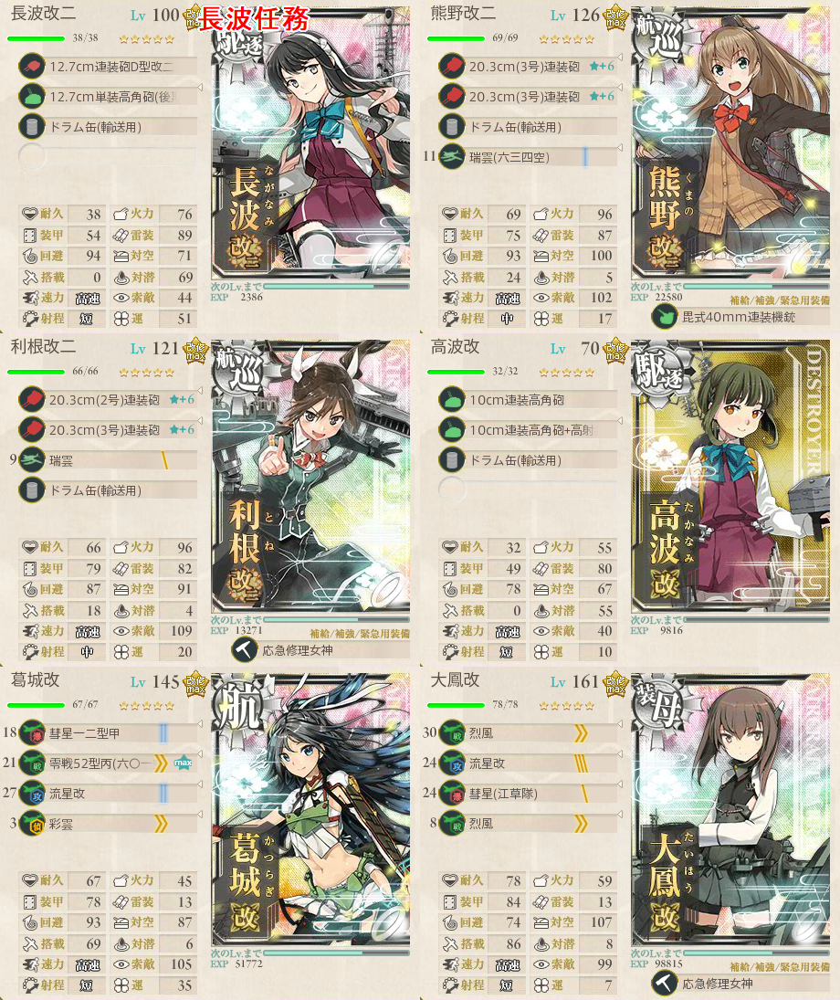
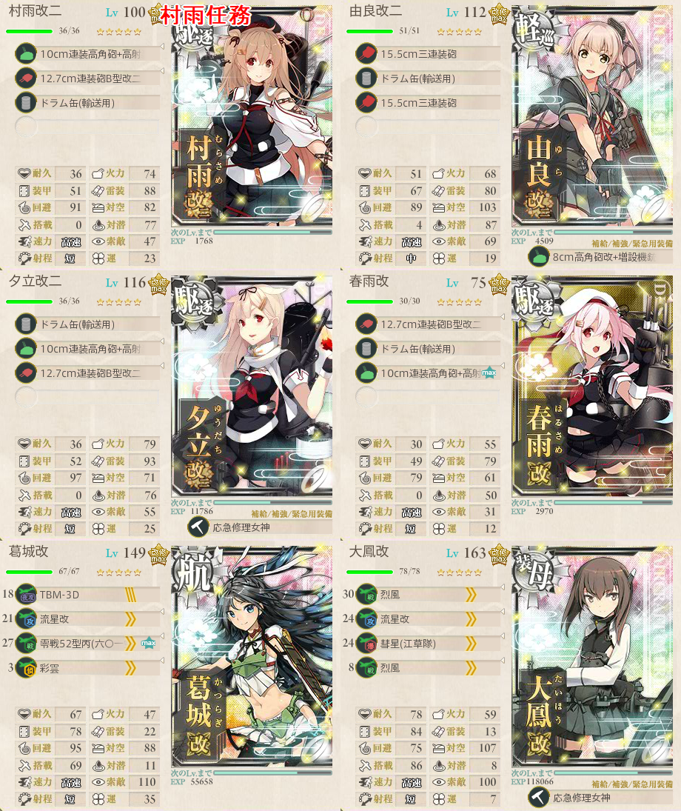

【艦これ】5-4 サーモン海域
5-4 サーモン海域 攻略メモ
任務
海域指定任務
- 精鋭「三一駆」、鉄底海域に突入せよ！（クォータリー 長波改二任務）
- 精鋭「四水戦」、南方海域に展開せよ！（ワンオフ？ 村雨改二任務）
艦種指定任務
- 敵空母を3隻撃沈せよ！（デイリー 北ルートで1～7隻）
- 敵補給艦を3隻撃沈せよ！（デイリー ボスマスで1隻確定）
- 敵潜水艦を制圧せよ！（デイリー 中央/南ルートIマスで3～6隻）
編成
長波改二任務
ボスで2回S勝利
長波改二と改造済みの第31駆逐隊から1隻が必須
- 第31駆逐隊＝朝霜、高波、沖波
現実的に考えうるルートは3通り
- 鉄板北ルート AEHMO
- ドラム缶を投げ捨てる中央ルート BFILNO
- 長波様と言えば夜戦でしょと錯乱する南ルート CGILMO
南ルートには空母と雷巡が使用できず、道中で夜戦が２回
- しかもドラム缶を3隻以上に分散して合計4以上搭載する必要あり
- よほど夜戦にこだわりがなければ南ルートは避けておきたい
中央ルートはドラム缶こそいらないものの、南と同じく潜水艦との夜戦あり
- 空母系を1以下に抑えるだけでよく、編成の自由度は高い
- 道中3戦と潜水艦との夜戦を許容できるならこれを選択するのも手
- 朝霜は対潜能力が強力ではあるものの、夜戦マスでは先制対潜攻撃は行われないことに注意
北ルートは鉄板
- 高速統一 ドラム缶合計4 空母2以上を満たせば良い
- 任務必須の駆逐艦2 + 空母2 + 他2の構成になる
- 駆逐艦を夜戦で活躍させるなら航巡2にしてドラム缶を分散
- 楽をするなら駆逐2にドラム缶4を押し込めて空母4でも可

村雨改二任務

長波任務と違い、固定枠が4であるところが厄介
各々の火力確保のためドラム缶を分散して、空母2を添えて北ルートを突っ切る
幸いにして敵の装甲はさほどでもないので、昼戦でも十分にS勝利を狙える
出撃ログ
2018年3月期
| 回数 | 編成 | ルート | 戦果 |
|---|---|---|---|
| 1 | 長波 熊野 利根 高波 天城 蒼龍 | AEHMO | S勝利（秋雲） |
| 2 | 長波 熊野 鈴谷 高波 天城 蒼龍 | AEHMO | S勝利（龍驤） |
2017年12月期
| 回数 | 編成 | ルート | 戦果 |
|---|---|---|---|
| 1 | 長波 熊野 利根 高波 葛城 大鳳 | A | 利根大破 |
| 2 | 長波 熊野 鈴谷 高波 葛城 大鳳 | AEHMO | S勝利（夕張） |
| 3 | 長波 熊野 筑摩 沖波 葛城 大鳳 | AEHMO | S勝利（隼鷹） |
敵編成
| マス | 編成 | 備考 |
|---|---|---|
| A | 軽空母1 軽巡1 駆逐4 | |
| 重巡1 軽巡1 駆逐4 | ||
| 軽巡2 駆逐4 | ||
| H | 装甲空母鬼2 ヲ級1 軽巡1 駆逐2 | 優勢174 確保348 |
| 装甲空母鬼1 ヲ級2 軽巡1 駆逐2 | 優勢150 確保300 | |
| ヲ級3 軽巡1 駆逐2 | 優勢125 確保249 | |
| O | 補給1 戦艦2 軽巡1 駆逐2 | ボス |
| 補給1 戦艦2 ヲ級1 軽空母2 | 優勢114 確保228 | |
| 補給1 戦艦2 軽巡1 軽空母2 | 優勢72 確保144 | |